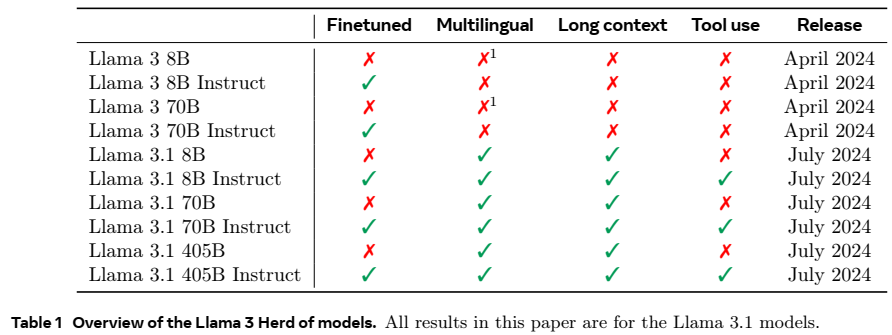
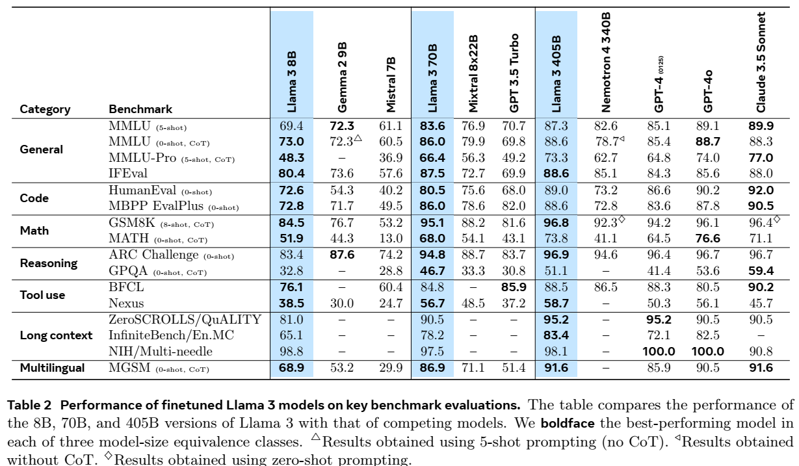
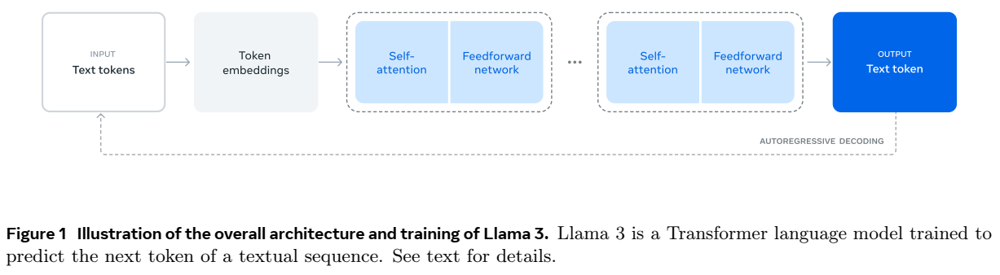
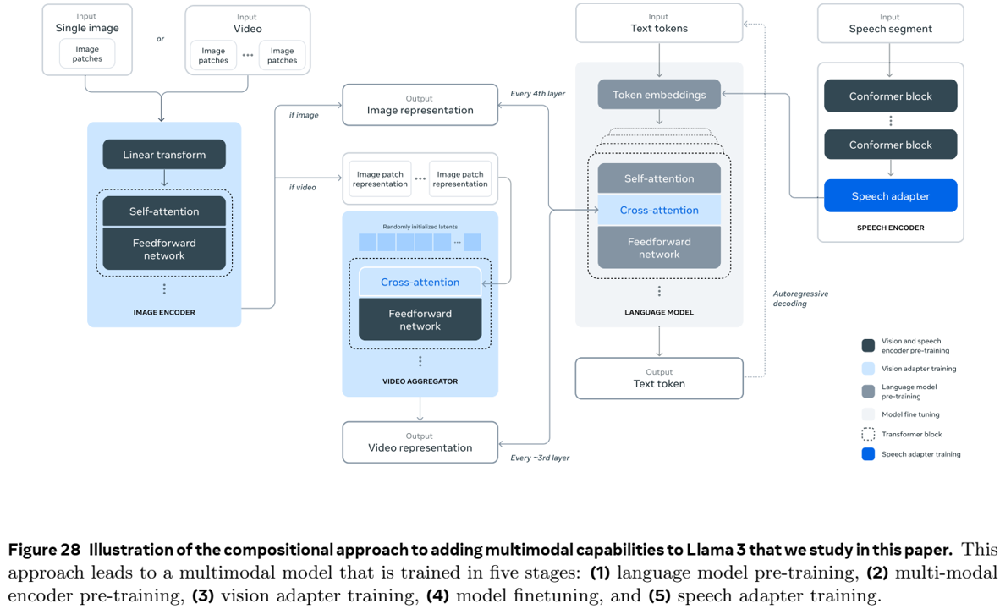

论文阅读二十九：Llama3
当今人工智能（AI）系统由基础模型驱动。本文介绍一组新的基础模型，称为Llama3。它是一群语言模型，原生支持多语言、编码、推理和工具使用。我们最大的模型是具有405B参数和上下文窗口达到128K标记的密集Transformer。本文展示Llama3的大量实验评估。我们发现，Llama3在大量任务上提供了与GPT-4等领先语言模型相当的质量。我们公开发布Llama3，包括预训练和后训练的405B参数语言模型和我们用于输入和输出安全的Llama Guard 3模型版本。本文还介绍了我们通过组合方法将图像、视频和语音功能集成到Llama3中的实验结果。我们观察到，这种方法在图像、视频和语音识别任务上与最先进的技术具有竞争力。结果模型尚未广泛发布，因为它们仍在开发中。
Website: https://llama.meta.com
引言
基础模型是通常的语言、视觉、语言，和/或其他模态的模型，设计用于支持各种各样的人工智能任务。它们构成了许多现代人工智能系统的基础。
当前基础模型的发展包含两个主要阶段：（1）预训练阶段，使用直接的任务（如下一个单词预测或字幕）对模型进行大规模训练；（2）后训练阶段，模型被调整为遵循指令，与人类偏好保持一致，并提高特定能力（例如编码和推理）。
本文中，我们推出一组新的语言基础模型，称Llama3。Llama3模型组原生支持多语言、编码、推理，和工具使用。我们的最大的模型是具有405B参数的密集Transformer，在长达128k标记的上下文窗口中处理信息。每个组员列在表1。本文展示Llama3.1的结果，为简便我们称为Llama 3。

我们认为，开发高质量的基础模型有三个关键杠杆：数据、规模和管理复杂性。我们力求在开发过程中优化这三个杠杆：
数据。与之前的Llama版本相比（Touvron等人，2023a，b），我们提高了用于训练前和训练后的数据的数量和质量。这些改进包括为训练前数据开发更仔细的预处理和管理管道，以及为训练后数据开发更严格的质量保证和过滤方法。我们在大约15T多语言标记的语料库上预训练Llama 3，而Llama 2的标记为1.8T。
规模。我们训练的模型比以前的Llama模型规模大得多：我们的旗舰语言模型是使用3.8×1025 FLOP进行预训练的，比Llama 2的最大版本多出近50倍。具体来说，我们在15.6T文本标记上预训练了一个具有405B可训练参数的旗舰模型。正如基础模型的缩放定律所预期的那样，我们的旗舰模型优于使用相同程序训练的小型模型。虽然我们的缩放定律表明，我们的旗舰模型对于我们的训练预算来说是一个近似计算最优的大小，但我们也训练较小的模型的时间比计算最优的时间要长得多。在相同的推理预算下，所得模型的性能优于计算最优模型。我们在训练后使用旗舰模型来进一步提高这些较小模型的质量。
管理复杂性。我们做出的设计选择旨在最大限度地提高我们扩展模型开发过程的能力。例如，我们选择了一个标准的密集Transformer模型架构（Vaswani等人，2017），并进行了小幅调整，而不是混合专家模型（Shazeer等人，2017年），以最大限度地提高训练稳定性。同样，我们采用了一种基于监督微调（SFT）、拒绝采样（RS）和直接偏好优化（DPO；Rafailov等人（2023））的相对简单的后训练过程，而不是更复杂的强化学习算法（Ouyang等人，2022；Schulman等人，2017），后者往往不太稳定，更难扩展。
我们的工作成果是Llama 3：一组具有8B、70B和405B参数的三种多语言1语言模型。我们评估了Llama 3在大量基准数据集上的性能，这些数据集涵盖了广泛的语言理解任务。此外，我们进行了广泛的人体评估，将Llama 3与竞争模型进行了比较。表2概述了旗舰Llama 3模型在关键基准上的性能。我们的实验评估表明，我们的旗舰模型在各种任务中的表现与GPT-4（OpenAI，2023a）等领先语言模型相当，接近于最先进的水平。我们的较小模型是同类中最好的，优于参数数量相似的替代模型（Bai等人，2023；Jiang等人，2023）。Llama 3也比其前身在有益和无害之间提供了更好的平衡（Touvron等人，2023b）。我们在第5.4节中对Llama 3的安全性进行了详细分析。

我们将在Llama 3社区许可证的更新版本下公开发布所有三款Llama 2模型，见 https://llama.meta.com 。这包括我们405B参数语言模型的预训练和后训练版本，以及我们用于输入和输出安全的Llama Guard模型的新版本（Inan等人，2023）。我们希望旗舰模型的公开发布将激发研究界的创新浪潮，并加速通用人工智能（AGI）发展的负责任之路。
作为Llama 3开发过程的一部分，我们还开发了模型的多模态扩展，实现了图像识别、视频识别和语音理解功能。这些模型仍在积极开发中，尚未准备好发布。除了我们的语言建模结果外，本文还介绍了我们对这些多模态模型的初步实验结果。
总体概述

Llama 3的模型架构如图1所示。Llama 3语言模型的开发包括两个主要阶段：
语言模型预训练。我们首先将大型多语言文本语料库转换为离散标记，并在得到的数据上预训练大型语言模型（LLM）以执行下一个标记预测。在语言模型预训练阶段，模型学习语言的结构，并从“阅读”的文本中获得大量关于世界的知识。为了有效地做到这一点，我们进行了大规模的预训练：我们使用8K标记的上下文窗口在15.6T标记上预训练了一个具有405B参数的模型。这个标准预训练阶段之后是一个持续的预训练阶段，将支持的上下文窗口增加到128K个标记。详见第3节。
语言模型后训练。预训练的语言模型对语言有丰富的理解，但它还没有遵循指令或以我们期望助手的方式行事。我们在几轮中将模型与人类反馈对齐，每轮都涉及对指令调优数据的监督微调（SFT）和直接偏好优化（DPO；Rafailov等人，2024）。在这个后训练阶段，我们还整合了新的功能，如工具使用，并观察到其他领域的显著改进，如编码和推理。详见第4节。最后，在训练后阶段，安全缓解措施也被纳入模型中，详细内容见第5.4节。
由此产生的模型具有丰富的功能。他们可以用至少八种语言回答问题，编写高质量的代码，解决复杂的推理问题，并使用现成的或零样本方式的工具。
我们还进行了实验，使用合成方法将图像、视频和语音功能添加到Llama 3中。我们研究的方法包括图28所示的三个附加阶段：
多模态编码器预训练。我们为图像和语音训练单独的编码器。我们在大量的图像文本对上训练我们的图像编码器。这教会了模型视觉内容与自然语言中内容描述之间的关系。我们的语音编码器是使用自监督方法训练，掩码了部分的语音输入，并试图通过离散的标记表示来重建被掩码的部分。因此，该模型学习了语音信号的结构。关于图像编码器的详细信息，请参见第7节；关于语音编码器的详细内容，请参见第7节。
视觉适配器训练。我们训练一个适配器，将预训练的图像编码器集成到预训练的语言模型中。适配器由一系列交叉注意力层组成，这些层将图像编码器表示输入到语言模型中。适配器是在文本图像对上训练的。这将使图像表示与语言表示对齐。在适配器训练期间，我们还更新了图像编码器的参数，但我们故意不更新语言模型参数。我们还在成对的视频文本数据上在图像适配器的之上训练一个视频适配器。这使得模型能够跨帧聚合信息。详见第7节。
语音适配器训练。最后，我们通过适配器将语音编码器集成到模型中，适配器将语音编码转换为标记表示，可以直接馈送到微调的语言模型中。适配器和编码器的参数在监督微调阶段联合更新，以实现高质量的语音理解。在语音适配器训练过程中，我们不会更改语言模型。我们还集成了一个文本转语音系统。详见第8节。
我们的多模态实验产生了可以识别图像和视频内容的模型，并支持通过语音界面进行交互。这些模型仍在开发中，尚未准备好发布。
视觉实验
我们进行了一系列实验，通过由两个主要阶段组成的组合方法，将视觉识别能力整合到Llama3中。首先，我们通过在大量图像文本对上引入和训练两个模型之间的一组交叉注意力层（Alayrac等人，2022），组成了一个预训练的图像编码器（Xu等人，2023）和预训练的语言模型。这导致了图28所示的模型。其次，我们引入了时间聚合器层和额外的视频交叉关注层，它们对大量的视频文本对进行操作，以学习模型来识别和处理视频中的时间信息。

基础模型开发的组合方法有几个优点：（1）它使我们能够并行开发视觉和语言建模能力；（2） 它避免了视觉和语言数据联合预训练的复杂性，这些复杂性源于视觉数据的标记化、源自不同模态的标记的背景困惑差异以及模态之间的争用；（3） 它保证了纯文本任务的模型性能不受视觉识别能力引入的影响，并且（4）交叉注意力架构确保我们不必花费计算时间，将全分辨率图像通过越来越大的LLM主干（特别是每个变换器层中的前馈网络），使其在推理过程中更加高效。我们注意到，我们的多模式模型仍在开发中，尚未准备好发布。
在第7.6节和第7.7节中展示我们的实验结果之前，我们描述了用于训练视觉识别能力的数据、视觉组件的模型架构、我们如何扩展这些组件的训练，以及我们的训练前和后训练方法。
数据
我们在下面分别描述我们的图像和视频数据。
图像数据
我们的图像编码器和适配器是在图像文本对上训练的。我们通过一个复杂的数据处理管道构建这个数据集，该管道由四个主要阶段组成：（1）质量过滤，（2）感知去重，（3）重采样，以及（4）光学字符识别。我们还采取了一系列安全缓解措施。
质量过滤。我们实现了质量过滤器，通过启发式方法（如Radford等人，2021）产生的低对齐分数）删除非英语字幕和低质量字幕。具体来说，我们删除低于某个CLIP分数的所有图像文本对。
去重。对大规模训练数据集进行去重有利于提高模型性能，因为它减少了在冗余数据（Esser 等人，2024 年；Lee 等人，2021 年；Abbas 等人，2023 年）和记忆（Carlini 等人，2023 年；Somepalli 等人，2023 年）上花费的训练计算。因此，出于效率和隐私的原因，我们对训练数据进行了去重。为此，我们使用最先进的SSCD拷贝检测模型的内部版本（Pizzi等人，2022）来大规模地对图像进行去重。对于所有图像，我们首先使用SSCD模型计算512维表示。我们使用这些嵌入来使用余弦相似性度量对数据集中的所有图像中的每个图像执行最近邻（NN）搜索。我们将超过某个相似性阈值的示例定义为重复。我们使用连通组件算法对这些重复项进行分组，每个连通组件只维护一个图像文本对。我们通过以下方式提高了重复数据消除管道的效率：（1）使用k-means聚类对数据进行预聚类，（2）使用FAISS（Johnson等人，2019）进行NN搜索和聚类。
重采样。我们通过类似于Xu等人（2023）的重采样来确保图像-文本对的多样性；Mahajan等人（2018）；Mikolov等人（2013）。首先，我们通过解析高质量的文本源来构建n元语法词汇表。接下来，我们计算数据集中每个词汇n元语法的频率。然后，我们按如下方式对数据进行重新采样：如果标题中的任何n元语法在词汇表中出现的次数少于T次，我们将保留相应的图像-文本对。否则，我们以概率 对标题中的每个n元组 进行独立采样，其中 表示n元组 的频率；如果对n元语法中的任何一个进行采样，我们将保留图像-文本对。这种重采样有助于低频类别和细粒度识别任务的性能。
光学字符识别。我们通过提取图像中写入的文本并将其与字幕连接，进一步改进了图像文本数据。使用专有的光学字符识别（OCR）管道提取书面文本。我们观察到，将OCR数据添加到训练数据中可以大大改善需要OCR功能的任务，例如文档理解。
转录文档。为了提高我们的模型在文档理解任务上的性能，我们将文档中的页面呈现为图像，并将图像与其各自的文本配对。文档文本可以直接从源获取，也可以通过文档解析管道获取。
安全性。我们主要关注确保图像识别的预训练数据集不包含不安全的内容，例如性虐待内容 (CSAM) (Thiel，2023)。我们使用感知哈希方法（如PhotoDNA（Farid，2021））以及内部专有分类器扫描所有训练图像以查找CSAM。我们还使用专有的媒体风险检索管道来识别和删除我们认为是NSFW的图像文本对，例如，因为它们包含性或暴力内容。我们认为，在训练数据集中尽量减少此类材料的流行可以提高最终模型的安全性，而不会影响其有用性。最后，我们对训练集中的所有图像进行面部模糊处理。我们根据引用附加图像的人工生成提示来测试模型
退火数据。我们通过使用n-grams将图像字幕对重新采样到更小的3.5亿个样本来创建退火数据集。由于n-gram重采样有利于更丰富的文本描述，因此选择了更高质量的数据子集。我们用来自五个其他来源的约1.5亿个示例来增强结果数据：
-
视觉基础。我们将文本中的名词短语链接到图像中的边界框或掩码。真实信息（边界框和掩码）在图像文本对中以两种方式指定。（1） 我们在图像上叠加带有标记的框或掩码，并使用文本中的标记作为参考，类似于一组标记（Yang等人，2023a）。（2） 我们将归一化（xmin、ymin、xmax、ymax）坐标直接插入文本中，并用特殊标记进行分隔。
-
截图解析。我们从HTML代码中渲染屏幕截图，并让模型预测屏幕截图中产生特定元素的代码，类似于Lee等人（2023）。感兴趣的元素在屏幕截图中通过边界框指示。
-
问答对。我们包括问答对，使我们能够使用大量的问答数据，这些数据太大，无法用于模型微调。
-
合成字幕。我们包括由早期版本的模型生成的带有合成字幕的图像。与原始字幕相比，我们发现合成字幕比原始字幕提供了更全面的图像描述。
-
合成生成的结构化图像。我们还包括各种领域的合成生成图像，如图表、表格、流程图、数学方程和文本数据。这些图像伴随着结构化表示，如相应的markdown或LaTeX表示法。除了提高模型对这些领域的识别能力外，我们发现这些数据对于通过文本模型生成问答对进行微调非常有用。
视频数据
对于视频预训练，我们使用大量的视频文本对数据集。我们的数据集是通过多阶段过程策划的。我们使用基于规则的启发式方法过滤和清理相关文本，例如确保最小长度和固定大小写。然后，我们运行语言识别模型来过滤非英语文本。我们运行OCR检测模型来过滤掉重叠文本过多的视频。为了确保视频文本对之间的合理对齐，我们使用CLIP（Radford等人，2021）风格的图像文本和视频文本对比模型。我们首先使用视频中的单个帧计算图像-文本相似性，并过滤出低相似性对，然后过滤出低视频-文本对齐的对。我们的一些数据包含静态或低运动视频；我们使用基于运动分数的滤波来过滤掉这些数据（Girdhar等人，2023）。我们不会对视频的视觉质量应用任何过滤器，如美学评分或分辨率过滤。
我们的数据集包含平均持续时间为21秒、中位持续时间为16秒的视频，其中99%以上的视频不到一分钟。320p和4K视频的空间分辨率差异很大，超过70%的视频短边大于720像素。这些视频具有不同的纵横比，几乎所有视频的纵横比都在1:2到2:1之间，中位数为1:1。
模型架构
我们的视觉识别模型包含三个主要组件：（1）图像编码器，（2）图像适配器，和（3）视频适配器。
图像编码器。 我们的图像编码器是一个标准的视觉transformer（ViT；Dosovitskiy等，2020），训练用于对齐图像和文本（Xu等，2023）。我们使用图像编码器的ViT-H/14变体，它有630M参数，在2.5B图像文本对上训练了五个回合。图像编码器在分辨率224 224 的图像上训练；图像被分割为16 16 的相等大小的块（即，每个块大小为14 14 像素）。正如ViP Llava（Cai等人，2024）等先前工作所证明的那样，我们观察到，通过对比文本对齐目标训练的图像编码器无法保留细粒度的定位信息。为了缓解这个问题，我们使用一个多层特征提取器，其中除了最后一层的特征，来自 、 、 、 、和 层的特征也被提供。此外，在交叉注意力层预训练之前，我们进一步插入8个门控自注意力层（使得总共有40个transformer模块），来学习对齐特定的特征。因此带有附加层的图像编码器最终共有850M参数。利用多层特征，图像编码器为每个16×16=256个块生成7680维表示。图像编码器的参数在后续训练阶段不会冻结，因为我们发现这样可以提高性能，特别是在文本识别等领域。
图像适配器。我们在图像编码器产生的视觉标记表示和语言模型产生的标记表示之间引入了交叉注意力层（Alayrac等人，2022）。在核心语言模型中，每四个自注意层之后应用交叉注意层。与语言模型本身一样，交叉注意力层使用广义查询注意力（GQA）来提高效率。交叉注意层在模型中引入了大量额外的可训练参数：对于Llama3 405B，交叉注意层有≈100B个参数。我们分两个阶段对图像适配器进行预训练：（1）初始预训练，然后是（2）退火：
- 初步预训练。我们在上述6B图像文本对的数据集上预训练我们的图像适配器。出于计算效率的原因，我们调整所有图像的大小，以适应最多四个336×336像素的块，其中我们排列块以支持不同的纵横比，例如672×672、672×336和1344×336。
- 退火。我们继续在上述退火数据集中的约500M图像上训练图像适配器。在退火过程中，我们提高了每块图像的分辨率，以提高需要更高分辨率图像的任务的性能，例如信息图理解。
视频适配器。我们的模型最多接受64帧（从完整视频中均匀采样）作为输入，每一帧都由图像编码器处理。我们通过两个组件对视频中的时间结构进行建模：（i）编码的视频帧由一个时间聚合器聚合，该聚合器将32个连续帧合并为一个；（ii）在每四个图像交叉关注层之前添加额外的视频交叉关注层。时间聚合器被实现为感知重采样器（Jaegle等人，2021；Alayrac等人，2022）。我们使用每个视频16帧（聚合为1帧）进行预训练，但在监督微调期间将输入帧数增加到64帧。视频聚合器和交叉注意力层分别具有用于Llama 3 7B和70B的0.6B和4.6B参数。